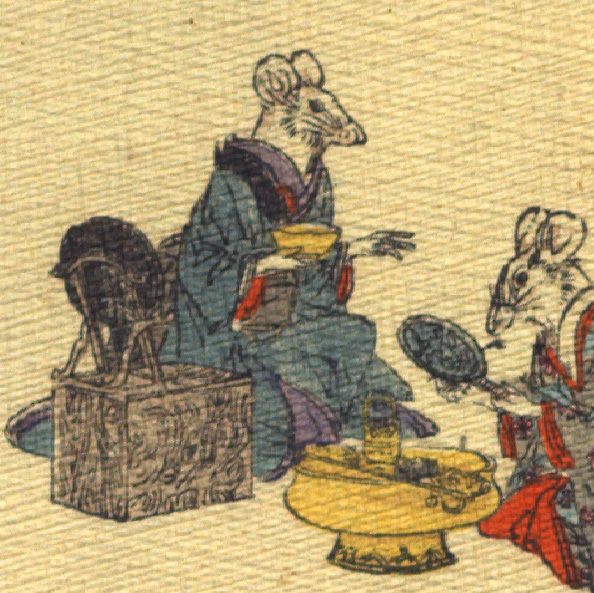

女の鼠。青色の着物をまとって、片膝立ちで座っている。脇に鏡台が置かれている。右手に金物らしき器を持ち、左手を差し伸べて、画面右側にいる鼠に話しかけようとしている。
著作者：J.Dautremer／出典：親書誌：U426_nichibunken_0111：Le mariage de la souris／日付：2006／資源識別子：U426_nichibunken_0111_0006_0001
Copyright (c)2010- International Research Center for Japanese Studies, Kyoto, Japan. All rights reserved.